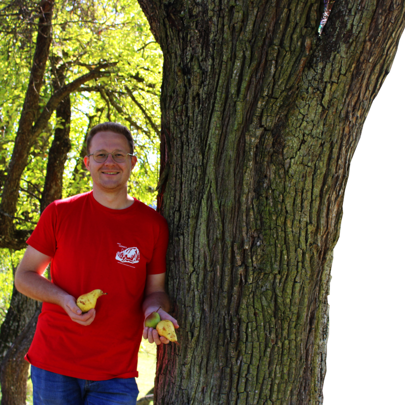
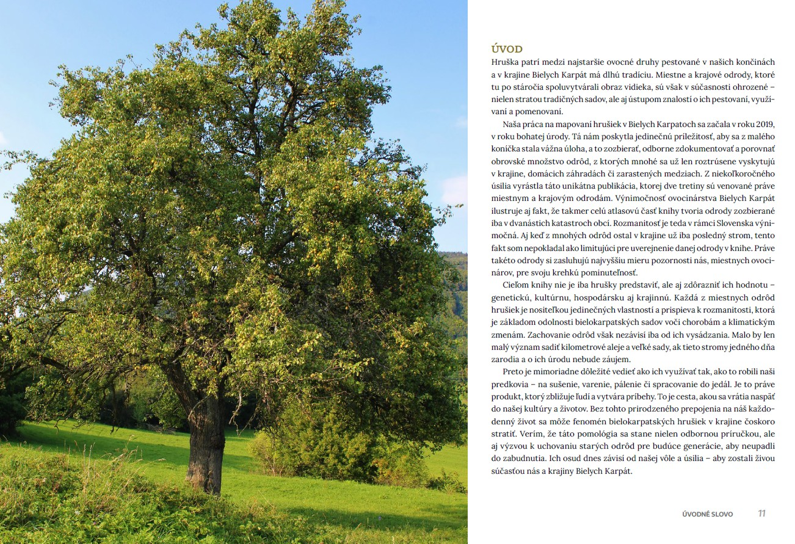
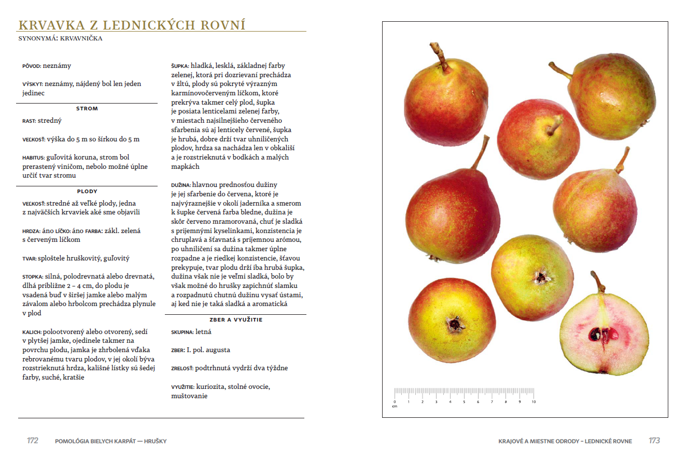

Prvá kniha venovaná hruškám

Vzťah k ovociu a stromom som si budoval odmalička. Staré odrody a ich určovanie, sa stali mojim koníčkom a celý život sa im s veľkým zápalom venujem. Hoci som vyštudoval Fakultu chemickú na Vysokom učení technickom v Brne a v tomto odvetví pôsobím, môj vzťah k ovocinárstvu časom prerástol do systematického záujmu o zachovanie miestnych a krajových odrôd a profesionálne som v tejto oblasti vyrástol.
Moja práca nadväzuje na tradíciu klasickej, najmä českej pomológie, no zároveň reaguje na súčasné výzvy, ktoré ohrozujú genetickú a kultúrnu rozmanitosť bielokarpatských sadov. Publikácia je výsledkom niekoľkoročného terénneho výskumu a snahy systematicky zdokumentovať naše kultúrne dedičstvo, ktoré by inak mohlo nenávratne zaniknúť.
Táto kniha je prvou slovenskou regionálnou pomológiou. Na 384 stranách knihy nájdete výsledky terénneho mapovania z oblasti Bielych Karpát, detailné popisy a autentické fotografie celkovo 135 odrôd hrušiek. Z tohto počtu je 55 starých, všeobecne rozšírených odrôd a 80 miestnych a krajových odrôd špecifických pre tento región. Kniha je obohatená množstvom tématických ilustrácií od grafika Jana Karlíka.

Úvod

Krvavka z Lednických Rovní
Vyplňte formulár nižšie:
Email: pomologiabk@gmail.com
Mobil: +420733154796